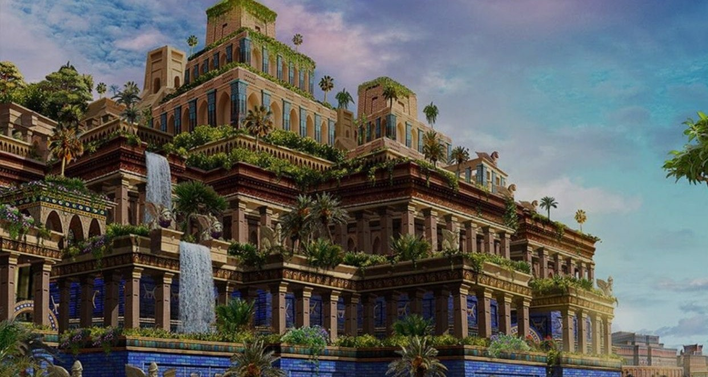

Jardins Suspensos da Babilônia
Descritos como jardins exuberantes construídos em terraços elevados, são uma das maravilhas mais misteriosas, pois não há provas concretas de sua existência.

Descritos como jardins exuberantes construídos em terraços elevados, são uma das maravilhas mais misteriosas, pois não há provas concretas de sua existência.